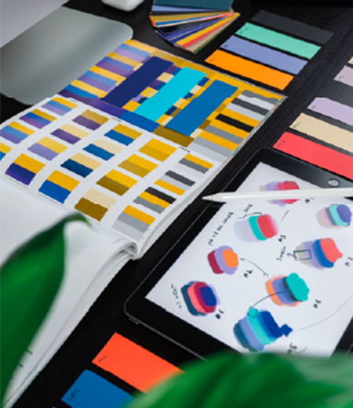

Perfil
Hola me llamo Gisel soy arquitecta y futura diseñadora UX UI. Me especializo en el diseño, la decoración, y en pensar como mejorar usabilidad del espacio. Este año decidí comenzar a desarrollarme en el mundo IT como diseñadora UX/UI y desarrolladora web. Por lo tanto, empecé a estudiar la carrera de desarrollo UX/UI en CoderHouse, la cual disfruté mucho desde el primer día, por lo cual comencé la carrera de Diseño digital en la ORT Argentina, para poder aprender otras miradas del diseño y profundizar más mis conocimientos en el mismo, ya que contengo una buena base gracias a la carrera de arquitectura.
